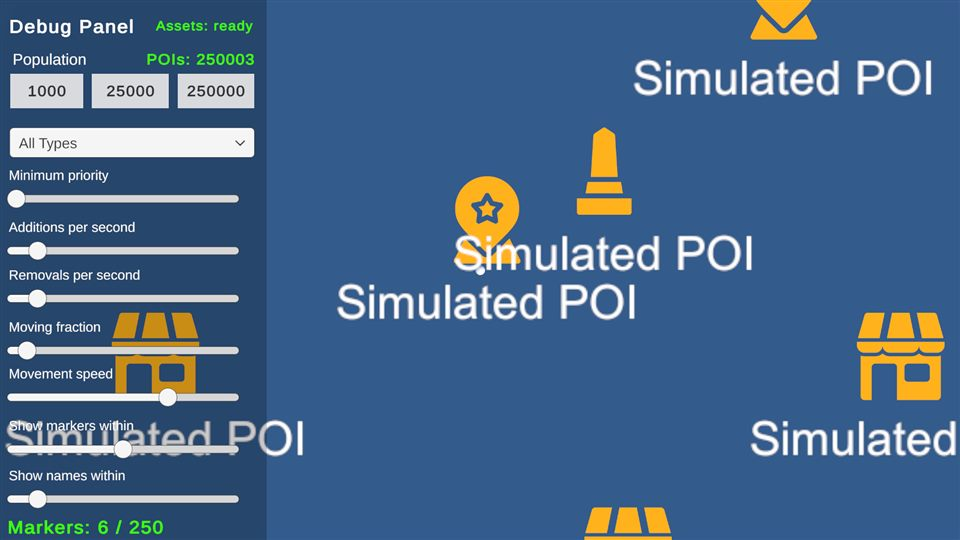
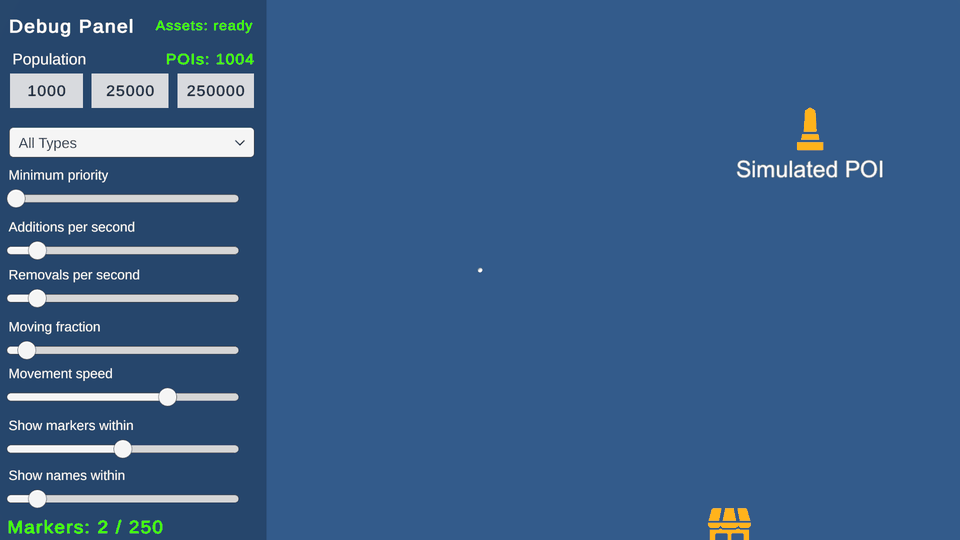
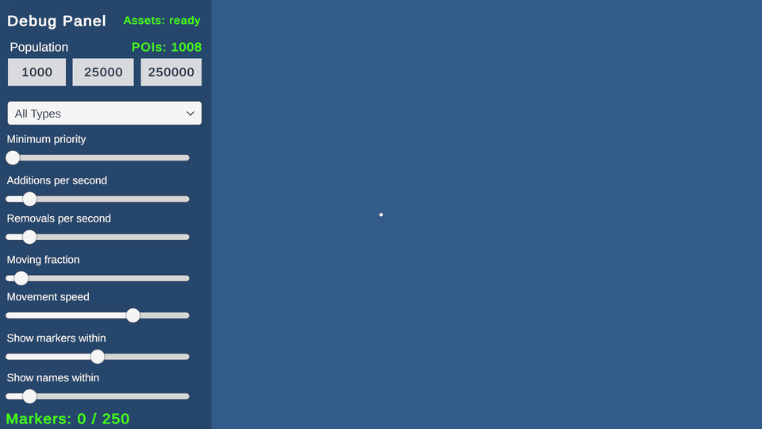
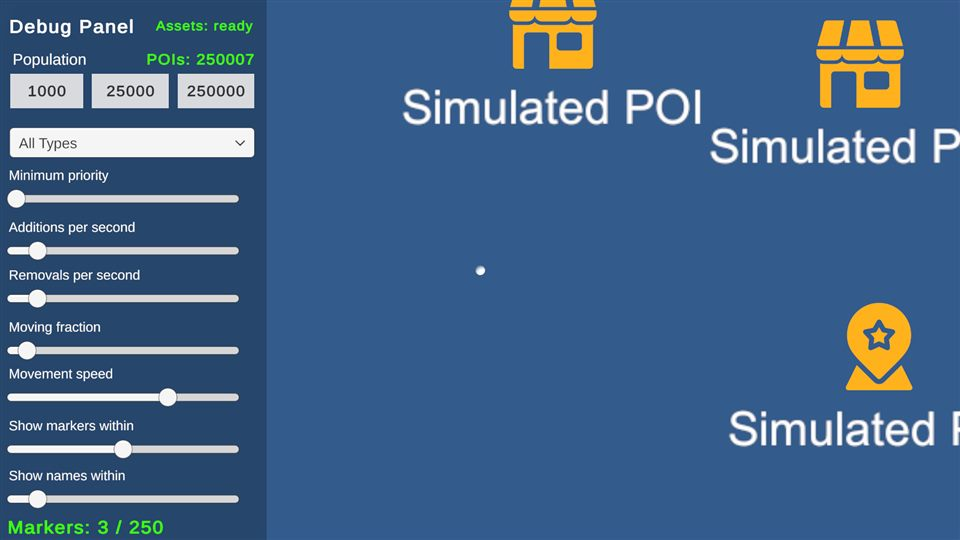

A live dataset with no known upper bound
The brief described a 16 km × 16 km open world viewed by a top-down camera that can rise from 50 m to 400 m. Points of interest arrive from a live feed: some exist at session start, others appear, move, change or disappear at any moment. The total count is unknown when the scene loads and must be able to go from 1,000 to 250,000 and back without reloading.
The engineering constraints were the interesting part:
- Deciding which POIs deserve a marker must not touch every POI in the world each frame.
- Insertions, moves and removals must be absorbed incrementally, with 5% of a 250,000-record dataset moving continuously.
- At most N markers may be active, keeping the best by priority and then by ground distance from the player, while the player moves and the data churns.
- No GameObject per POI, and no Unity physics queries for selection.
- A pooled marker must never show stale data, even if an asynchronous icon load finishes after the marker was recycled.
- The selection layer must be testable in edit mode with no scene, camera or GameObjects.
Because the camera looks straight down, every visible POI is roughly the same distance from the camera. Level of detail is therefore driven by ground distance from the player, not camera distance.
My responsibility
This was a solo project. I researched the approach, designed the architecture, implemented and tested it, captured the profiler data and wrote the documentation. The requirements came from an external technical brief; the design decisions and measurements are mine.
What I owned
- Spatial store and incremental update strategy
- Bounded priority selection and filtering
- Application service and feed abstraction
- Feed simulator and seed-data loading
- Marker pooling, Addressables loading and LOD presentation
- VContainer composition and assembly boundaries
- Edit-mode test suite
- Profiling, measurement and written limitations
Not mine
- The generic priority queue is adapted from Amy Elliott’s implementation; local changes are documented in the repository.
- UniTask and VContainer are third-party libraries.
- AI coding assistants were used within documented architecture guardrails, which the brief permitted.
Keep the question “which POIs matter now?” out of Unity
The system is split into four assemblies with one dependency direction. The domain layer answers the spatial and priority questions in pure C#, so it can be tested without a scene, and it never knows that markers, cameras or Addressables exist.
- Presentationviews, presenters, camera, marker pool
- ApplicationPoiApplicationService, IPoiFeed
- DomainPoiStore, PoiSelector
Infrastructure (feed simulator, JSON seed loader) implements the application ports. VContainer wires everything at the composition root.
- Camera ground rectanglederived from height and field of view
- Spatial queryonly the 200 m cells the rectangle touches
- Filtertype, minimum priority, display range
- Bounded selectionbest N by priority, distance, ID
- Pooled markersicon, or icon + label when close
Architecture themes
- Pure C# domain with no MonoBehaviour, GameObject or UI references
- Passive MonoBehaviour views and plain C# presenters (MVP)
- Feed abstraction raising Added / Moved / Changed / Removed events
- Constructor injection through VContainer, with no singletons or service locator
- Explicit event unsubscription and Addressables release on disposal
Make per-frame cost follow the view, not the world
A linear scan over every POI is simple and correct, but its cost grows with the whole world. At 250,000 records that is wasted work for a camera that sees a small rectangle of the map.
PoiStore divides the ground plane into uniform 200 m cells. Each cell holds a list of POI IDs. A query converts the camera’s ground rectangle into a cell range, visits only those cells and keeps the records that fall inside the rectangle.
Stated cost
Spatial query: O(B + C), where B is the number of cells the view touches and C is the number of records in those cells. Neither term depends on the total world population N, only on what lies under the camera.
Density still matters. If more records crowd into the same visible area, C grows. The design accepts that honestly: cost follows relevant records, which is what the brief asked for.
Absorb insertions, moves and removals without rebuilding
With 5% of 250,000 records moving, the index absorbs 12,500 position updates every frame. Rebuilding it was never an option, and naïve list removal (searching a bucket, then shifting elements) would make every move cost more as cells fill up.
Each record caches its current cell and its index inside that cell’s bucket. That makes every mutation a constant-time operation:
- Move within a cell: update the position only.
- Move across cells or remove: swap the last ID in the bucket into the vacated slot, fix that record’s cached index, then remove from the end of the list.
- Empty cells are dropped from the dictionary so removed areas do not stay resident.
Lookup, add, move and remove are O(1) amortized. A later change stored records as value types inside the dictionary entry, which removed a per-record allocation from the churn path.
Keep the best 250 without sorting everything
At maximum height, the camera rectangle can contain far more candidates than the 250-marker budget. Sorting all of them every frame would cost O(Q log Q) for Q visible candidates.
PoiSelector instead keeps a bounded heap ordered worst-first. Each candidate is compared against the current worst; it only enters the heap if it beats that worst entry. Ranking is higher priority first, then shorter ground distance from the player, then lower ID, so ties are deterministic and markers do not flicker between equal candidates.
Stated cost
Selection: O(Q log M), where M is the marker budget. Space is O(M). The budget holds every frame, including while the player moves and the feed churns.
Type, minimum-priority and display-range filters are applied inside the same pass, so filter changes take effect on the next frame without any rebuild.
Make stale marker data impossible, not just unlikely
The classic pooled-UI bug is an asynchronous icon load finishing after its marker has been recycled for a different POI. Guarding every callback with version tokens works, but it adds a race to reason about on every reuse.
I removed the race instead. The marker prefab and the whole icon catalog load through Addressables once, during initialization. No marker exists until that load completes. After that, binding a pooled marker to a POI is entirely synchronous, so there is no callback that can arrive late.
The failure paths are handled too. If loading fails, or completes after the presenter has been disposed, the handles it acquired are still released.
Key tradeoff
A small, fixed icon catalog held in memory, in exchange for marker reuse with no asynchronous state. This fits a bounded set of POI types; a catalog of thousands of unique icons would need a different strategy.
Measurements
Measured under the brief’s worst-case workload: player moving, camera at 400 m, 5% of records moving, 100 additions and 100 removals per second, budget of 250. Unity Profiler captures in Editor Play mode at 1920 × 1080, 300 frames each, with no samples discarded. Hardware: Ryzen 5 5600X, RTX 3080, 24 GB RAM.
| POIs in world | Avg frame | p95 frame | Spatial query / frame | Active markers |
|---|---|---|---|---|
| 1,000 | 2.53 ms | 3.14 ms | 0.008 ms | 3–4 |
| 25,000 | 3.23 ms | 4.40 ms | 0.031 ms | ~30 |
| 250,000 | 7.78 ms | 10.75 ms | 0.221 ms | 250 (budget) |
A 250× larger world raised average frame time by about 3×. Most of that increase comes from the workload itself: moving 5% of the world means 50 updates per frame at 1,000 POIs and 12,500 at 250,000. Even at 250,000 records, the spatial query stays around a fifth of a millisecond.
Raw profiler captures, frame-time CSVs and the calculation method are in the repository.
What the measurements do not show
I documented these in the repository rather than leaving them for a reviewer to find:
- Not allocation-free under churn. Roughly 100 bytes of GC were observed in sampled frames. Recreating empty cell lists is one known source; it has not been confirmed as the only one.
- Editor numbers only. Standalone-player performance has not been measured.
- Short captures. Long-session stability and memory after shrinking from 250,000 back to 1,000 were checked manually, not with a memory capture.
The obvious next steps are pooling the cell lists, measuring a standalone build, and a long-session memory capture.
Choose the data structure, then measure the claim
Most of the performance came from choosing what not to do each frame: not scanning the world, not rebuilding the index, not sorting every candidate, and not giving pooled markers any asynchronous state. The architecture then made those decisions testable: the spatial store and selector are verified in edit mode against independent ground-truth sorting, with no scene involved.
Stating the expected cost first and then measuring it also changed the documentation. Writing down where the numbers stop being evidence is as useful to a reviewer as the numbers themselves.
Media & external evidence



